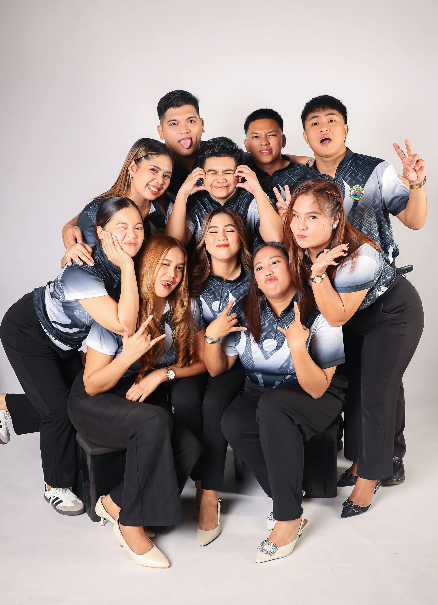
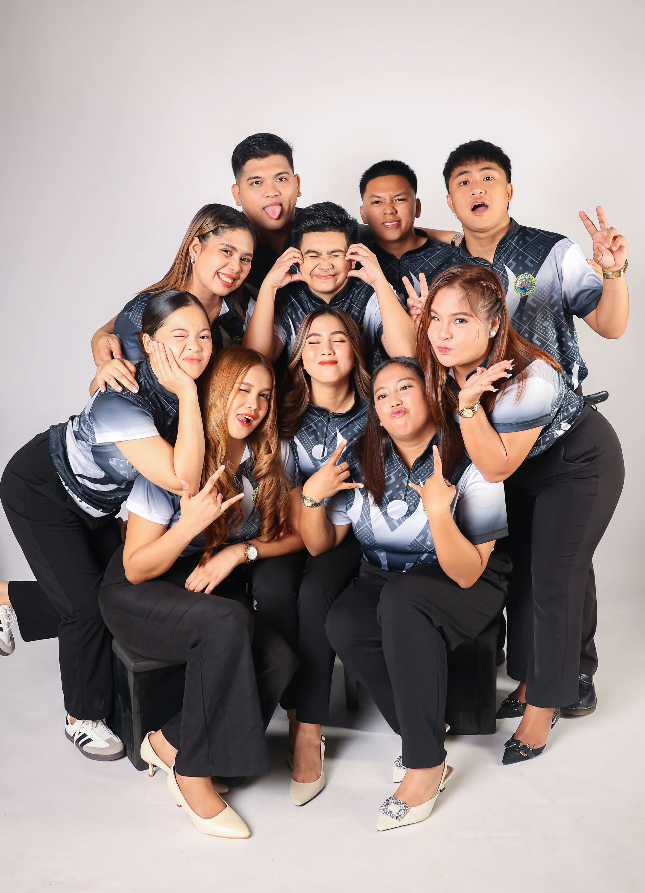

Task Force Youth Council of Barangay Lower Bicutan, Taguig was created/formed by Kagawad Camille Joy Adriano to empower the potentials of the youth and also to give different projects to the youths of barangay. It was March 2014, TFYC was created. Various projects and seminars conducted by the team, including the annual Summer League for Basketball and Volleyball 2017, the TFYC was handled by Kagawad Ricardo "Goma" Cruz IV which is also the head of the Youth Development of the Barangay 2018, the Sangguniang Kabataan Lower Bicutan is under the supervision of SK Chairman Denn Michael “Dingdong” Bahan together with 7 SK Councilors, 1 SK Secretary, and 1 SK Treasurer In the current year 2023, the Sangguniang Kabataan Lower Bicutan is now under the supervision of SK Chairwoman June Lyn A. Tabanao together with the team LYNkod Kabataan consisting 7 SK Councilors, 1 SK Secretary, and 1 SK Treasurer for the year 2023- 2025.
 

To be an inclusive and proactive youth organization that inspires leadership, promotes positive change, and empowers every young individual to participate in building a progressive, transparent, and united community.
To provide meaningful opportunities for the youth to engage in nation-building by initiating programs that enhance skills, leadership, and social responsibility. We are committed to fostering transparency, accountability, and active participation to create sustainable and impactful community initiatives.